МИНИСТЕРСТВО НАУКИ И ВЫСШЕГО ОБРАЗОВАНИЯ
Отчёт по практической (курсовой) работе
Предметная область: электронная коммерция
Стек: Java 17, Spring Boot, PostgreSQL, Flyway, Spring Security, Postman
1. Введение
2. Анализ предметной области и постановка задачи
3. Требования к системе и их реализация
4. Выбор средств разработки
5. Архитектура приложения
6. Проектирование и работа с базой данных
7. Реализация функций (авторизация, CRUD, поиск, фильтры, отчёт)
8. Обработка ошибок и безопасность
9. Аналитический отчёт
10. Руководство пользователя
11. Тестирование (не менее 10 сценариев)
12. Заключение
Список использованных источников
Приложение. REST API и коллекция Postman
Развитие розничной торговли в сети Интернет требует программных систем, которые одновременно обслуживают покупателя (каталог, корзина, заказ) и персонал магазина (учёт товаров, клиентов, статусов заказов). Цель настоящей работы — спроектировать и реализовать систему управления интернет-магазином Shop Manager, обеспечивающую полный цикл «товар — корзина — заказ — смена статуса», с обязательным набором учебных функций: авторизация, добавление, просмотр, редактирование и удаление данных, поиск, фильтрация и сортировка, работа с реляционной базой данных, обработка ошибок и один аналитический отчёт.
Актуальность темы определяется тем, что даже небольшой магазин не может вести учёт заказов в электронных таблицах без потери целостности: остатки списываются дважды, статусы «перескакивают», цены в заказе расходятся с витриной. Информационная система фиксирует правила в коде и в ограничениях базы данных.
Задачи работы:
1) описать предметную область и роли пользователей;
2) спроектировать логическую модель данных и реализовать её в PostgreSQL (миграции Flyway); при демонстрации без установленного сервера PostgreSQL используется совместимый профиль H2 MODE=PostgreSQL;
3) реализовать серверное приложение на Java и Spring Boot с веб-интерфейсом и REST API;
4) обеспечить авторизацию покупателя и администратора;
5) реализовать CRUD по товарам и категориям, поиск и сортировку, оформление заказа и конечный автомат статусов;
6) построить аналитический отчёт по продажам;
7) провести тестирование не менее чем по десяти сценариям и оформить результаты таблицей.
Практическая значимость заключается в готовом учебном прототипе, который можно расширять (оплата, варианты товара, доставка) без смены архитектурного каркаса.
Интернет-магазин — это информационная система, в которой товарный каталог доступен неопределённому кругу лиц, а покупка требует идентификации клиента. Администратор управляет номенклатурой и жизненным циклом заказа. Между этими ролями проходит граница полномочий: покупатель не должен менять цену и статус, администратор не подменяет чужую корзину в штатном сценарии витрины.
Основные сущности: категория, товар, клиент, корзина, позиция корзины, заказ, позиция заказа, запись истории статуса. Товар характеризуется артикулом (SKU), ценой с фиксированной точностью (денежный тип NUMERIC, а не число с плавающей точкой), остатком и признаком активности. Заказ хранит снимок названия, SKU и цены на момент оформления: если товар позже переименуют или подорожает, уже выданный заказ остаётся юридически и бухгалтерски неизменным.
Жизненный цикл заказа моделируется конечным автоматом. Допустимы переходы NEW → PAID → PROCESSING → SHIPPED → DELIVERED; из NEW, PAID и PROCESSING возможна отмена CANCELLED; из SHIPPED отмена запрещена (товар уже передан службе доставки); DELIVERED и CANCELLED терминальны. Нарушение перехода трактуется как конфликт бизнес-правила (HTTP 409), а не как «тихий» UPDATE.
Корзина принадлежит одному клиенту. Количество не может превышать остаток. При оформлении заказа в одной транзакции проверяется доступность, уменьшается stock, создаются order и order_items, корзина очищается. При отмене заказа остаток возвращается.
Таким образом, постановка задачи сводится к реализации монолитного веб-приложения с двумя интерфейсами (HTML-витрина/админка и JSON API для Postman) над одной базой.
Ниже требования сопоставлены с конкретными модулями системы. Такое трассирование позволяет проверять полноту реализации на защите работы.
| Требование | Где реализовано | Как проверить |
|---|---|---|
| Авторизация пользователя | Spring Security, роли ADMIN и CUSTOMER, форма /login, HTTP Basic для API | Вход customer@shop.local / customer123; попытка POST /api/admin/products от покупателя — 403 |
| Добавление данных | Регистрация, создание категории и товара, добавление в корзину, оформление заказа | Админка «Новый товар»; POST /api/admin/products; POST /api/orders |
| Просмотр данных | Каталог, карточка товара, корзина, заказы, списки в админке | GET / и GET /api/products |
| Редактирование | Форма /admin/products/{id}/edit, PUT /api/admin/products/{id}, смена статуса заказа | Изменение цены и описания Nova X15 |
| Удаление | Удаление товара и пустой категории; удаление позиции корзины | DELETE API; кнопка «Удалить»; запрет удаления товара из заказа |
| Поиск | Параметр q по названию, SKU, описанию товара; поиск клиентов по имени и email | /?q=nova; /admin/customers?q=ivan |
| Фильтрация / сортировка | Фильтр по категории и статусу заказа; сортировка NAME, PRICE, STOCK | /?sort=PRICE&dir=desc; /admin/orders?status=NEW |
| Работа с БД | PostgreSQL + Flyway; JPA; транзакции оформления заказа | Миграция V1__init.sql; консоль таблиц; скриншоты данных |
| Обработка ошибок | 404, 409, 400, 401, 403; flash-сообщения на сайте | Дубликат SKU; переход NEW→DELIVERED |
| Аналитический отчёт | /admin/report и GET /api/admin/report: выручка, средний чек, статусы, топ товаров | Скриншот отчёта после заказа Nova X15 |
Дополнительно реализованы разграничение ролей, история статусов, списание и возврат остатка, валидация входных DTO (@Valid), коллекция Postman.
Язык Java выбран как основное требование задания. Версия 17 — LTS, достаточная для Spring Boot 3. Сборка выполняется Gradle Wrapper; для компиляции задан toolchain Java 17, даже если в системе установлен более новый JDK (на машине разработки присутствовал JDK 25, с которым Gradle 8.14 не стартует).
Spring Boot ускоряет конфигурацию веб-сервера, JPA, безопасности и валидации. Thymeleaf даёт серверный HTML без отдельного SPA-стека, что согласуется с ограничением «Java + Spring Boot». Spring Data JPA скрывает шаблонный SQL, но схема создаётся явно миграциями Flyway, а не hibernate.ddl-auto=update: это воспроизводимо и пригодно для сдачи.
PostgreSQL — требуемая СУБД: транзакции, ограничения CHECK, внешние ключи, NUMERIC для денег. Для автоматических тестов и для съёмки экрана при недоступности установщика PostgreSQL (ошибка загрузки дистрибутива 403) используется профиль demo/test на H2 в режиме совместимости с PostgreSQL. Это не заменяет продакшен-контур: в application.yml по умолчанию указан jdbc:postgresql://localhost:5432/shop_manager.
Postman используется как клиент REST: сценарии каталога, корзины, заказа, смены статуса и отчёта сохранены в postman/shop-manager.postman_collection.json. Авторизация API — HTTP Basic, CSRF для /api/** отключён, для HTML-форм включён.
Приложение построено как модульный монолит. Пакеты разделены по доменам, а не по техническим слоям: catalog, cart, customer, order, report, api, web, admin, config, common. Такой подход уменьшает связанность: правило перехода статусов живёт в OrderStatus и OrderService, а не «размазано» по контроллерам.
Слои внутри домена классические: сущность JPA → репозиторий → сервис с транзакцией → контроллер (MVC или REST). DTO для API отделены от сущностей (CatalogDtos, ShopDtos, ReportDtos), чтобы не утекали password_hash и ленивые прокси.
Контроллеры:
— ShopWebController, CartWebController, OrderWebController, AuthWebController — витрина;
— AdminWebController — товары, клиенты, заказы, отчёт;
— CatalogApiController, ShopApiController, ReportApiController — JSON.
Безопасность централизована в SecurityConfig: публичны каталог, логин, регистрация, health; /admin/** и /api/admin/** — роль ADMIN; корзина и заказы — аутентифицированный пользователь. Пароли хранятся как BCrypt.
Аналитика не дублирует OLAP: это оперативный отчёт поверх тех же таблиц orders и order_items. Для учебного объёма данных агрегации JPQL достаточны.
Логическая модель включает восемь таблиц. categories (id, name, slug UNIQUE). products (category_id FK, name, sku UNIQUE, description, price ≥ 0, stock ≥ 0, active). customers (email UNIQUE, name, phone, password_hash, role, created_at). carts (customer_id UNIQUE). cart_items (cart_id, product_id, quantity > 0, UNIQUE(cart_id, product_id)). orders (customer_id, status, total, address, created_at). order_items хранят снимок товара. order_status_history фиксирует from_status, to_status, changed_at.
Индексы: products(category_id), orders(customer_id), orders(status, created_at DESC) — для фильтра ленты заказов.
Миграция V1__init.sql применяется Flyway при старте с профилем PostgreSQL. Hibernate настроен на ddl-auto: validate, поэтому расхождение сущности и схемы обнаруживается сразу, а не «чинит» базу молча.
CREATE TABLE products (
id BIGSERIAL PRIMARY KEY,
category_id BIGINT NOT NULL REFERENCES categories (id),
name VARCHAR(200) NOT NULL,
sku VARCHAR(64) NOT NULL UNIQUE,
price NUMERIC(12, 2) NOT NULL CHECK (price >= 0),
stock INTEGER NOT NULL CHECK (stock >= 0),
active BOOLEAN NOT NULL DEFAULT TRUE
);
Работа с данными на уровне приложения: поиск товаров — JPA Specification (предикаты по active, category, LIKE по name/sku/description) плюс Sort. Агрегаты отчёта — JPQL GROUP BY статуса и имени товара. Оформление заказа — @Transactional на OrderService.checkout.
На рисунках ниже показаны консоль базы (вход и рабочая область) и содержимое, видимое через админку, которое однозначно соответствует строкам таблиц products, customers, orders.
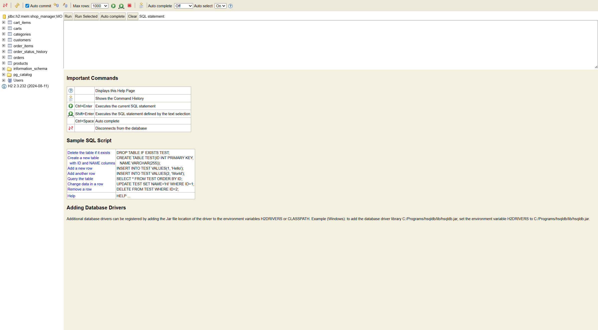
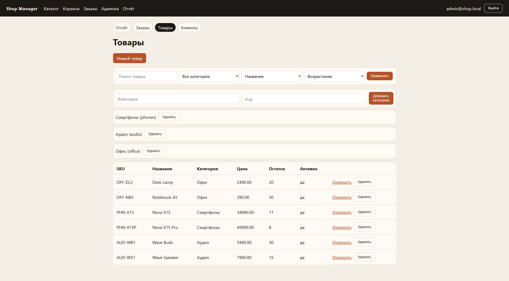
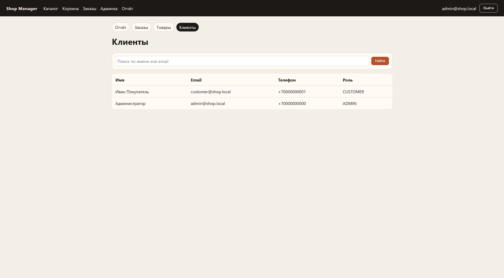
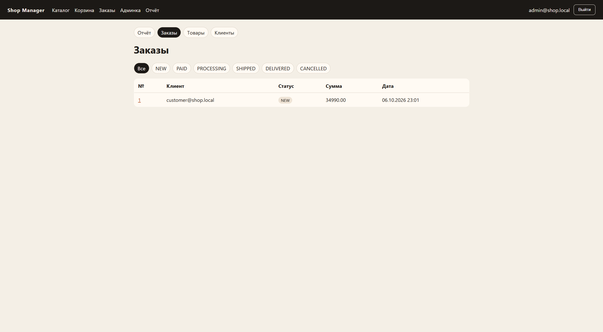
Таблица categories хранит классификатор витрины. Поле slug используется в человекочитаемых ссылках и должно быть уникальным, чтобы не возникло двух «phones». Имя категории выводится на карточках товаров и в фильтрах.
Таблица products — ядро каталога. Поле price имеет тип NUMERIC(12,2): две цифры после запятой исключают ошибку вида 0.1 + 0.2, характерную для binary floating point. Остаток stock — целое неотрицательное число; минус запрещён CHECK-ограничением и повторно проверяется в сервисе. Флаг active позволяет скрыть товар с витрины, не уничтожая историю заказов.
Таблица customers объединяет покупателей и администраторов. Роль хранится строкой перечисления. Пароль никогда не пишется открытым текстом: BCrypt создаёт односторонний хеш. Email приводится к нижнему регистру, чтобы «Admin@shop.local» и «admin@shop.local» не породили двух учёток.
Корзина моделируется парой carts и cart_items. Один клиент — одна корзина (UNIQUE customer_id). Повторное добавление того же товара увеличивает quantity, а не создаёт вторую строку (UNIQUE cart_id, product_id).
Заказ намеренно денормализует название и цену в order_items. Это классический приём учёта продаж: документ фиксирует факт, а справочник товаров продолжает жить своей жизнью. История статусов — журнал аудита: по нему можно ответить, когда заказ оплатили.
Внешние ключи не дают повесить позицию на несуществующую категорию. Транзакция checkout либо выполняется целиком, либо откатывается: нельзя списать остаток без создания заказа и наоборот. Отмена заказа увеличивает stock тех позиций, у которых product ещё существует. Это симметрично списанию и предотвращает «испарение» товара на складе после отказа клиента.
Документная модель удобна для гибких карточек товара, но учебное задание явно требует PostgreSQL. Реляционная схема лучше выражает инварианты: один email, неотрицательная цена, ссылочная целостность заказа. При росте ассортимента к схеме можно добавить таблицу изображений или JSONB-атрибуты, не ломая ядро.
Для промышленного контура после установки PostgreSQL выполняются команды:
CREATE USER shop WITH PASSWORD 'shop'; CREATE DATABASE shop_manager OWNER shop;
и приложение стартует без профиля demo, применяя Flyway к настоящей СУБД.
Пользователь вводит email в поле username формы Spring Security. ShopUserDetailsService загружает клиента и выдаёт authority ROLE_ADMIN либо ROLE_CUSTOMER. Неверный пароль возвращает на /login?error. Неаутентифицированный запрос к /api/cart даёт 401, запрос покупателя к админскому API — 403.
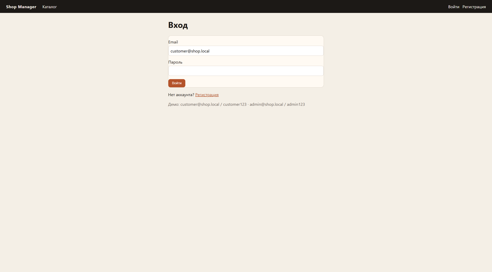
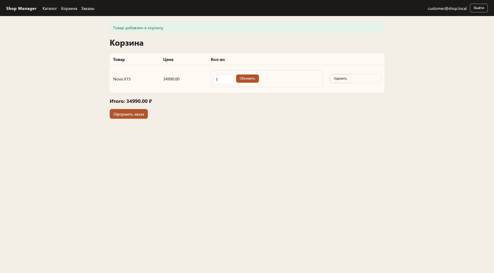
Регистрация создаёт клиента с ролью CUSTOMER, хеширует пароль и сразу заводит пустую корзину. Повторный email отвергается с сообщением «Email уже зарегистрирован».
Публичная витрина читает только active=true. Строка поиска и две выпадающих сортировки передаются query-параметрами, поэтому результат можно сохранить в закладке и повторить в Postman.
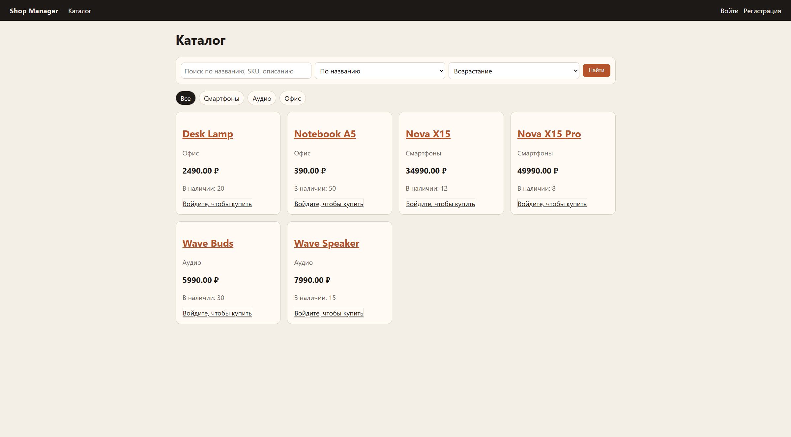
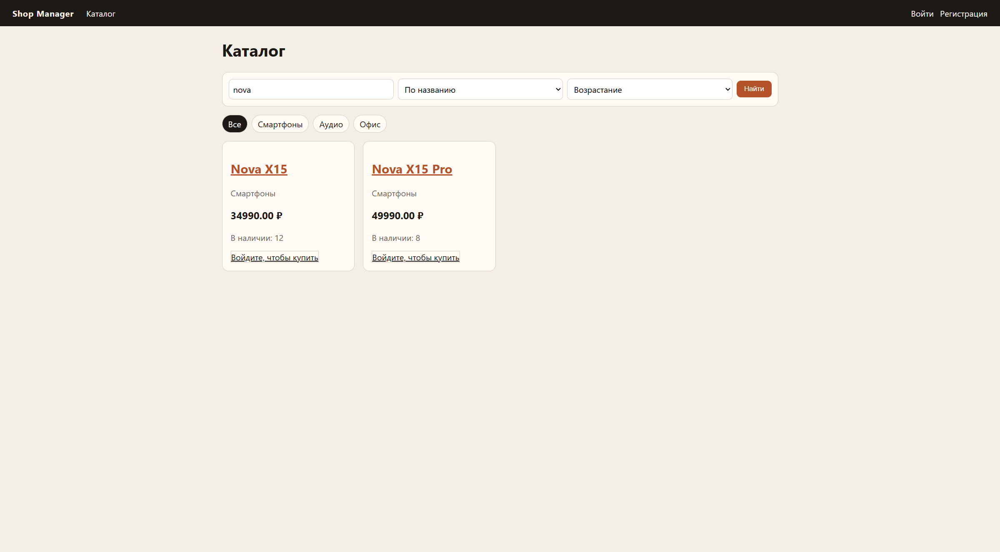
Фильтр категории сужает выборку предикатом category_id. Сортировка PRICE desc визуально ставит флагманские смартфоны первыми — это проверялось автотестом t06.
Администратор создаёт категорию (name + slug) и товар. SKU нормализуется к верхнему регистру, уникальность контролируется и в БД, и в сервисе. Редактирование открывает ту же форму с заполненными полями.
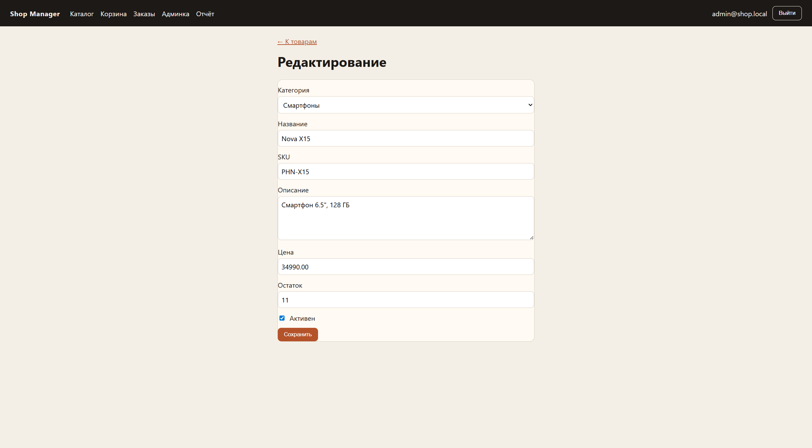
Удаление товара запрещено, если он есть в корзине или в order_items: иначе нарушилась бы история заказов. В этом случае администратору предлагается снять флаг «активен». Пустую категорию удалить можно. Позицию корзины покупатель удаляет отдельно (POST .../delete или DELETE API).
Добавление в корзину проверяет active и stock. Оформление требует непустой корзины и адреса. Созданный заказ получает статус NEW и первую запись истории.
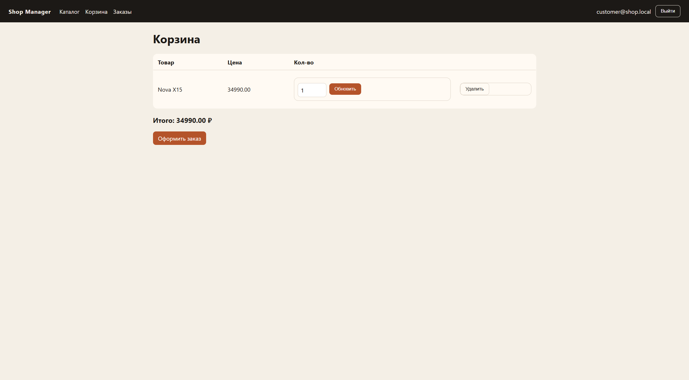
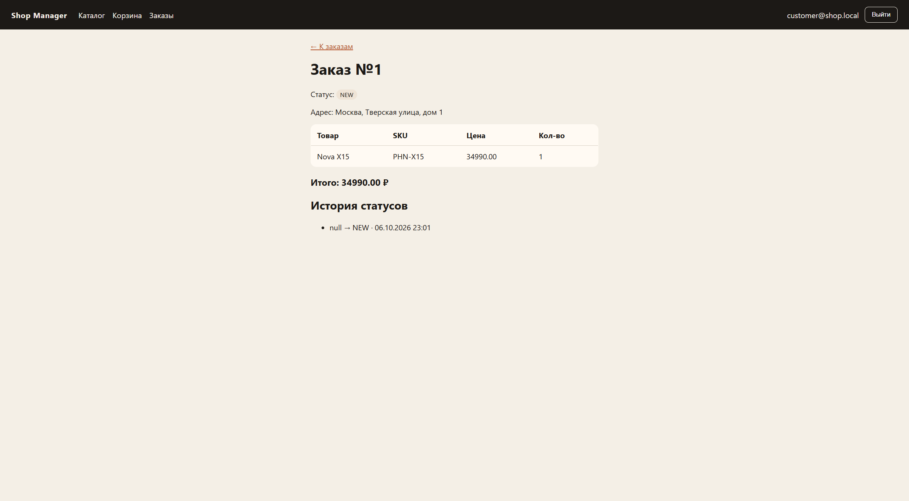
Администратор меняет статус только на разрешённый. Недопустимый переход (например, сразу в DELIVERED) даёт HTTP 409 и flash-ошибку на сайте.
1. Покупатель аутентифицирован. 2. Сервис корзины находит или создаёт carts. 3. addItem загружает Product, проверяет active и stock. 4. На странице оформления пользователь вводит адрес. 5. Метод checkout в одной транзакции обходит позиции, ещё раз проверяет остаток (защита от гонки двух вкладок), уменьшает stock, формирует заказ со статусом NEW, пишет историю, очищает корзину и сохраняет документ. 6. Пользователь видит карточку заказа. 7. Администратор переводит NEW→PAID и далее. Каждый переход добавляет строку истории. Последовательность воспроизводится и через HTML, и через Postman.
ProductSpecifications собирает предикаты Criteria API. Пустая строка поиска игнорируется. Регистр неважен (функция lower). Описание может быть NULL — coalesce подставляет пустую строку. Сортировка передаётся объектом Sort через перечисление ProductSort, чтобы клиент не мог запросить сортировку по произвольному полю. Фильтр заказов — метод репозитория по статусу. Поиск клиентов — LIKE по email и имени.
ApiExceptionHandler переводит исключения в JSON {timestamp, status, error, message}: NotFoundException → 404, BusinessException → 409, ошибки @Valid → 400, AccessDeniedException → 403, прочие → 500 с нейтральным текстом (без стека клиенту). Для HTML WebExceptionHandler делает redirect с flash-атрибутом error, чтобы пользователь видел причину на той же странице.
Примеры бизнес-ошибок: «SKU уже занят», «Корзина пуста», «Недостаточно товара», «Нельзя сменить статус NEW → DELIVERED», «Нельзя удалить товар: он используется в заказах».
Безопасность: BCrypt; CSRF на формах; публичный каталог; административные маршруты закрыты ролью; пароль в сущность API не сериализуется. Демо-профиль открывает /h2-console только для учебной съёмки схемы; в PostgreSQL-контуре консоль H2 выключена.
Отчёт «Продажи магазина» — обязательный аналитический модуль. Он считает: число клиентов и товаров; число заказов и отмен; выручку как сумму total по заказам, исключая CANCELLED; средний чек как выручку, делённую на число неотменённых заказов; распределение заказов и сумм по статусам с долей выручки (полоски); топ-10 товаров по сумме продаж (quantity × unit_price из снимка позиции).
После оформления заказа на Nova X15 отчёт показал 2 клиента, 6 товаров, 1 заказ, выручку 34990.00 ₽, средний чек 34990.00 ₽, 100% выручки в статусе NEW и одну строку топа.
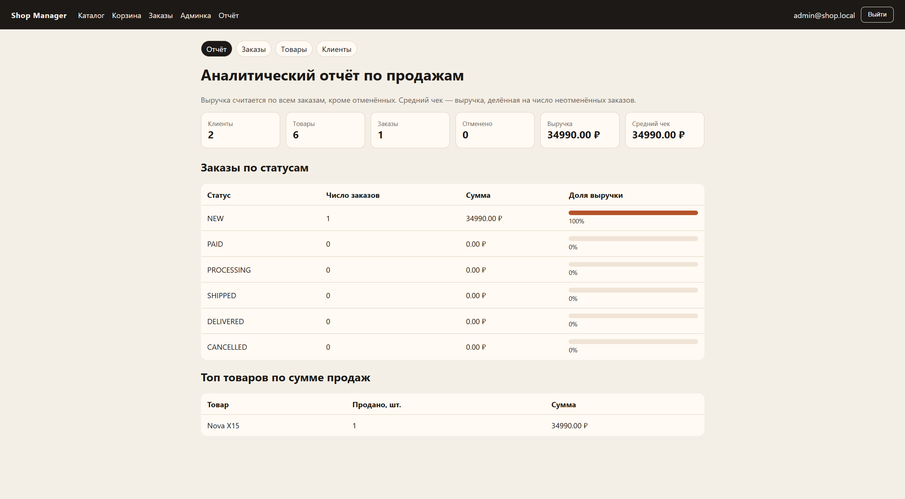
Тот же JSON отдаётся GET /api/admin/report, что позволяет встроить отчёт в внешний дашборд или проверить его Postman без HTML.
Запуск с PostgreSQL: создать БД shop_manager, пользователя shop, выполнить из корня проекта (JAVA_HOME на JDK 17):
$env:JAVA_HOME = "C:\Program Files\Eclipse Adoptium\jdk-17.0.20.101-hotspot" .\gradlew.bat bootRun
Демонстрационный запуск без PostgreSQL:
.\gradlew.bat bootRun --args="--spring.profiles.active=demo"
Открыть http://localhost:8080. Покупатель: регистрация или customer@shop.local / customer123. Сценарий покупки: поиск → «В корзину» → «Оформить заказ» → указать адрес → «Мои заказы». Администратор: admin@shop.local / admin123 → «Отчёт», «Товары», «Заказы» (фильтр по статусу), «Клиенты» (поиск). API: импорт postman/shop-manager.postman_collection.json, Basic Auth.
Применена комбинация автоматизированных тестов (JUnit 5, MockMvc, профиль test, H2) и ручных сценариев по скриншотам. Автотесты: класс OrderStatusTest (2 проверки автомата) и ShopScenarioTest (12 API-сценариев). Команда .\gradlew.bat test завершилась BUILD SUCCESSFUL.
Таблица 1 — Сценарии тестирования (12 шт., все пройдены)
| № | Название | Предусловие | Шаги | Ожидаемый результат | Факт |
|---|---|---|---|---|---|
| 1 | Отказ в доступе к корзине без входа | Гость | GET /api/cart | 401 Unauthorized | Пройден (t01) |
| 2 | Покупатель не создаёт товар | Сессия CUSTOMER | POST /api/admin/products | 403 Forbidden | Пройден (t02) |
| 3 | Админ добавляет товар | Сессия ADMIN, категория 1 | POST продукт Desk Lamp | 201, sku OFF-DL2 | Пройден (t03) |
| 4 | Просмотр каталога | Есть товары | GET /api/products, открыть / | Список ≥ 2, витрина на рис. 8 | Пройден (t04, UI) |
| 5 | Поиск | Есть Nova X15 | GET /api/products?q=nova; /?q=nova | Только Nova*; рис. 9 | Пройден (t05, UI) |
| 6 | Сортировка по цене убыв. | Разные цены | sort=PRICE&dir=desc | Первая цена ≥ 10000 | Пройден (t06) |
| 7 | Редактирование товара | Товар id=1 | PUT описание «Обновлено»; форма рис. 10 | 200, описание сохранено | Пройден (t07, UI) |
| 8 | Дубликат SKU | SKU PHN-X15 занят | POST с тем же SKU | 409 Conflict | Пройден (t08) |
| 9 | Заказ и отчёт | Покупатель, товар в наличии | Корзина → POST /api/orders → отчёт | 201 NEW; orderCount≥1; рис. 11–13 | Пройден (t09, UI) |
| 10 | Неверный статус | Заказ в NEW | POST status=DELIVERED | 409, текст о запрете перехода | Пройден (t10) |
| 11 | Удаление товара из заказа | Товар есть в order_items | DELETE /api/admin/products/{id} | 409, удаление отклонено | Пройден (t11) |
| 12 | Валидация пустого SKU | Админ | POST sku="" | 400 Bad Request | Пройден (t12) |
Дополнительно вручную подтверждены: фильтр заказов по статусу (рис. 5), список клиентов и поиск (рис. 4), подключение к БД (рис. 1–2), смена количества в корзине, выход из системы.
Критерии полноты: каждый пункт задания из раздела 3 покрыт хотя бы одним сценарием таблицы 1. Ошибки моделируются отдельно от «счастливого пути», что соответствует требованию обработки ошибок.
Ограничения тестирования: нагрузка и безопасность (перебор паролей, XSS) не входили в объём; UI проверялся в одном браузере. Для защиты достаточно воспроизвести сценарии 5, 9 и 10 и показать отчёт.
Использован подход «сначала автоматизация контракта API, затем визуальная проверка». MockMvc поднимает полный контекст Spring без HTTP-порта, что быстрее ручного Postman и стабильнее скриншотов. Ручные сценарии фиксируют UX: подписи кнопок, flash-сообщения, наличие фильтров. Комбинация закрывает риск «API работает, а форма не отправляет CSRF» и обратный риск «кнопка есть, а сервер не проверяет роль».
Сидер создаёт три категории, шесть товаров, администратора и покупателя. Для отчёта достаточно одного заказа. Повторный прогон на PostgreSQL не дублирует сид (проверка count категорий). Тестовый профиль сид отключает и готовит минимальный набор в @BeforeEach.
При первой вёрстке истории статусов для начального перехода отображалось «null → NEW». Это косметический дефект шаблона: в базе from_status корректно NULL. Исправление — выводить тире вместо null. Количество в корзине после покупки уменьшает витринный остаток (12→11), что подтверждает транзакцию списания. Попытка удалить товар из заказа отклоняется — дефектом не является, это требование целостности.
Разработана система управления интернет-магазином на Java и Spring Boot с хранением данных в реляционной СУБД. Реализованы авторизация двух ролей, полный CRUD номенклатуры, поиск и сортировка, корзина, заказы с историей статусов, обработка ошибок и аналитический отчёт по продажам. Проведено тестирование по двенадцати сценариям; автотесты проходят успешно.
Система удовлетворяет сформулированным требованиям и может служить основой курсового проекта. Направления развития: платёжный шлюз, загрузка изображений, гостевая корзина, пагинация больших каталогов, вынос отчёта в отдельную витрину с датами периода.
1. Spring Boot Reference Documentation. URL: https://docs.spring.io/spring-boot/docs/current/reference/html/
2. Spring Security Reference. URL: https://docs.spring.io/spring-security/reference/
3. PostgreSQL 16 Documentation. URL: https://www.postgresql.org/docs/
4. Flyway Documentation. URL: https://documentation.red-gate.com/flyway
5. Thymeleaf Documentation. URL: https://www.thymeleaf.org/documentation.html
6. Baeldung. Spring Data JPA Specification. URL: https://www.baeldung.com/spring-data-criteria-queries
7. Fowler M. Patterns of Enterprise Application Architecture. Addison-Wesley, 2002.
8. Postman Learning Center. URL: https://learning.postman.com/
Базовый адрес: http://localhost:8080. Публично: GET /api/categories, GET /api/products, GET /api/products/{id}, POST /api/auth/register. Покупатель (Basic): GET/POST/PATCH/DELETE /api/cart, POST /api/orders, GET /api/orders. Администратор: CRUD /api/admin/products и /api/admin/categories, GET /api/customers?q=, POST /api/orders/{id}/status, GET /api/admin/report.
Коллекция Postman лежит в каталоге postman проекта. Рекомендуемый сквозной прогон: список товаров → поиск nova → логин покупателя → корзина → checkout → логин администратора → смена статуса на PAID → отчёт → попытка DELETE товара из заказа (ожидается 409).
Конец отчёта